Vlak bij Brussel, met glooiende landschappen, statige kastelen en groene parken
Waals-Brabant ligt vlak bij Brussel en combineert glooiende landschappen met statige kastelen en groene parken. Rond plaatsen als Waterloo, Waver, Nivelles en La Hulpe vind je kasteeldomeinen met vijvers, tuinen en dreven die uitnodigen tot rustige wandelingen.
Sommige kastelen zijn vooral bekend om hun parken en gezinsvriendelijke voorzieningen, andere om hun historische rol in grote gebeurtenissen zoals de Slag bij Waterloo.
Op deze pagina ontdek je een overzicht van kastelen in Waals-Brabant, met links naar detailpagina's zodat je je uitstap eenvoudig kunt plannen.
Sommige liggen midden in een uitgestrekt park, andere in de buurt van Waterloo, Nivelles of langs belangrijke verkeersassen rond Brussel. Klik door naar de afzonderlijke kasteelpagina's voor foto's, achtergrondinformatie en praktische tips voor je bezoek.
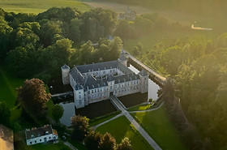
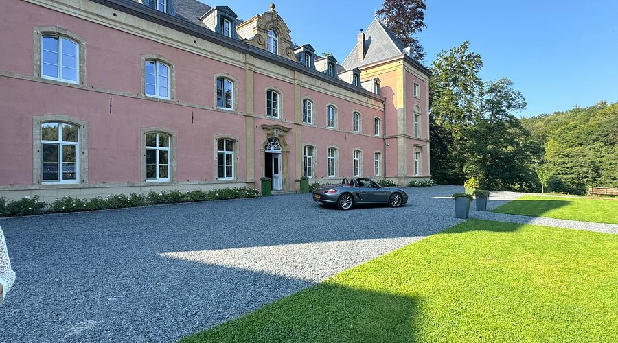
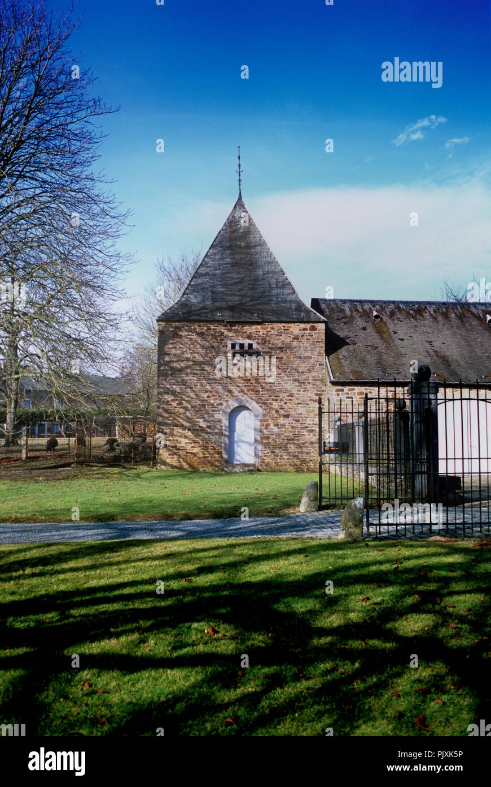
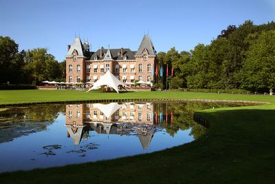
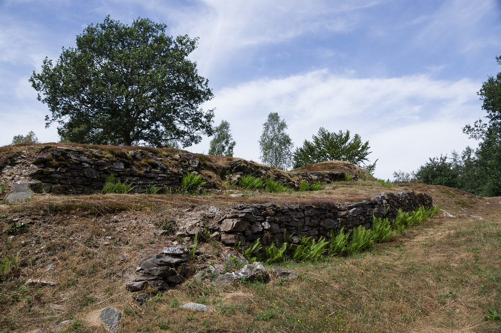
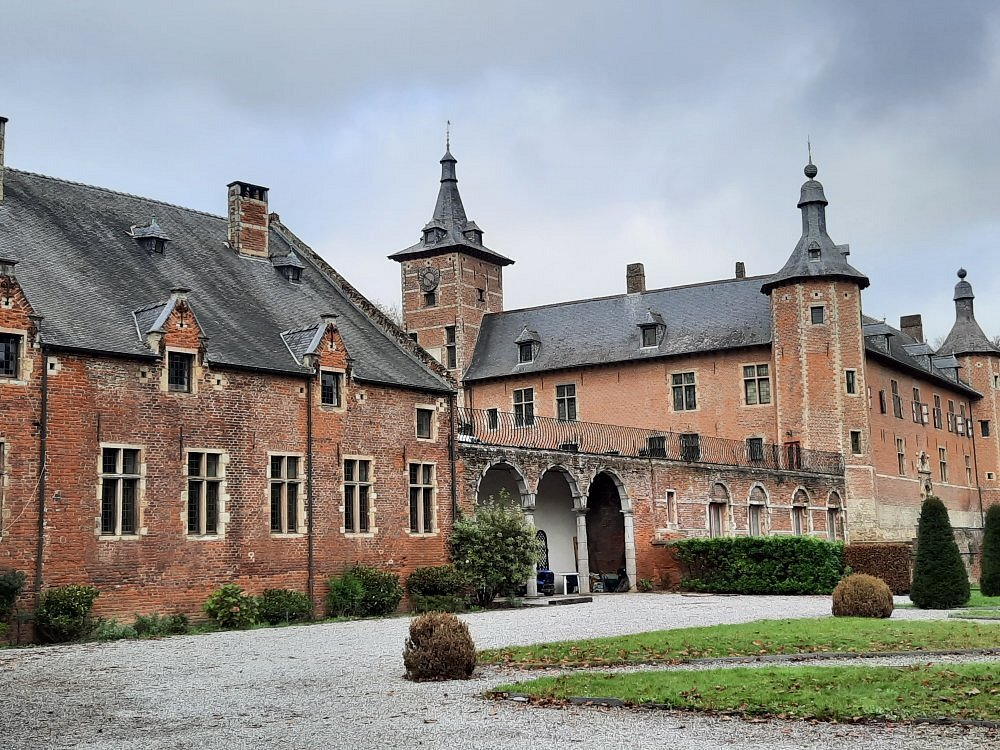
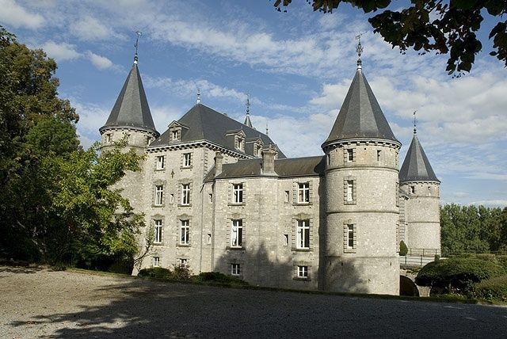
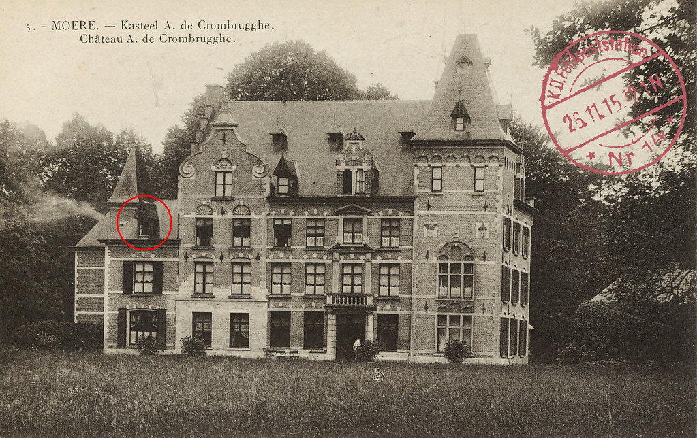
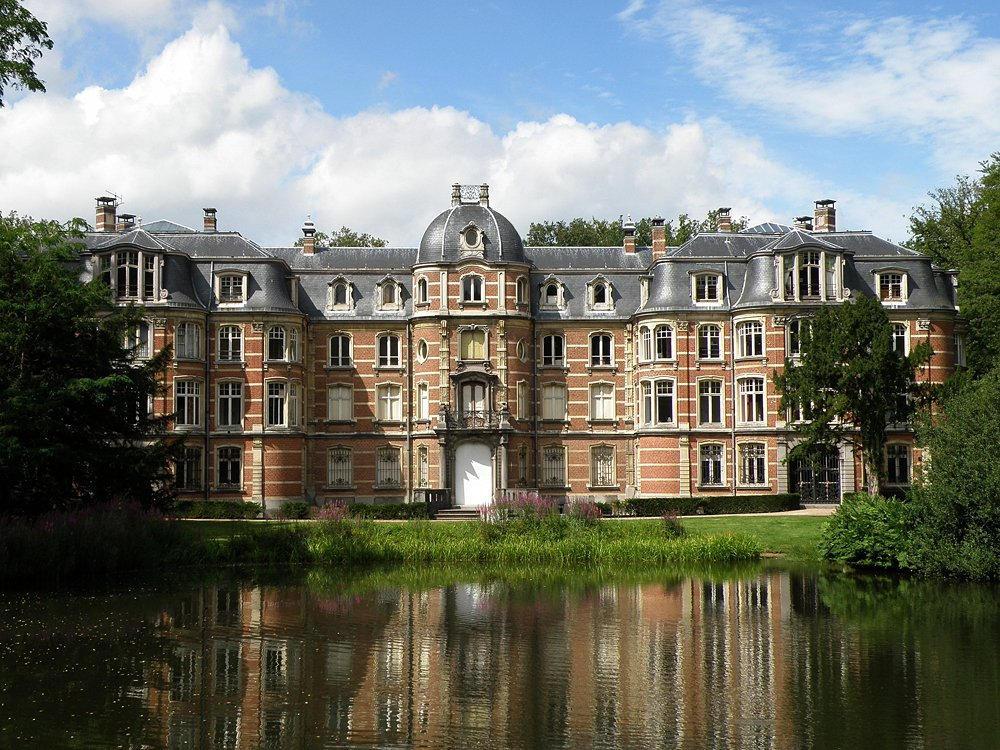
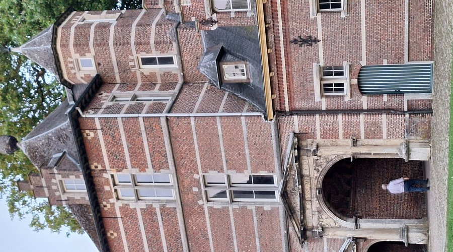
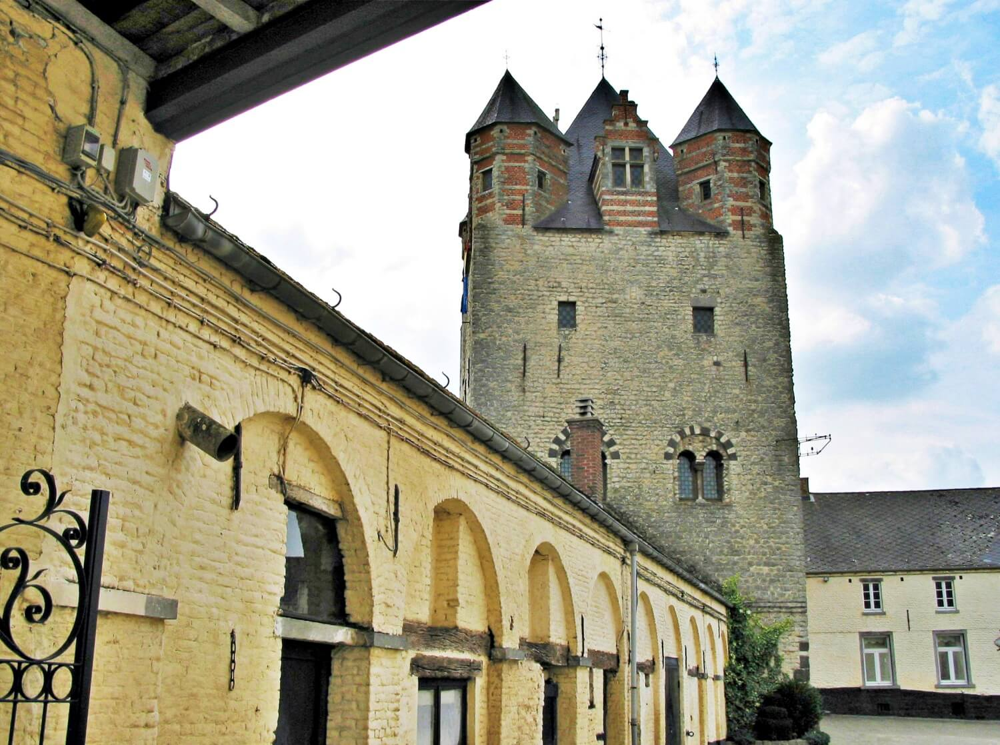
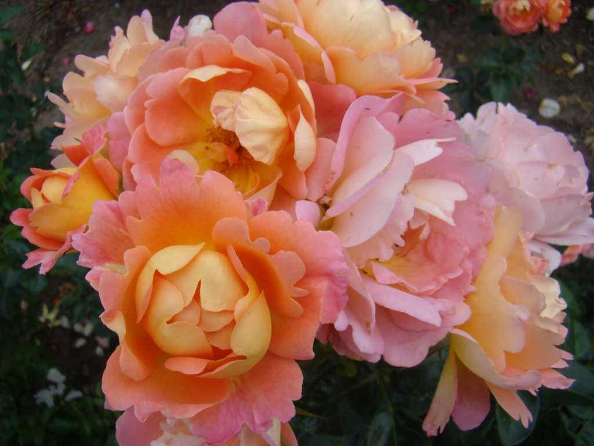
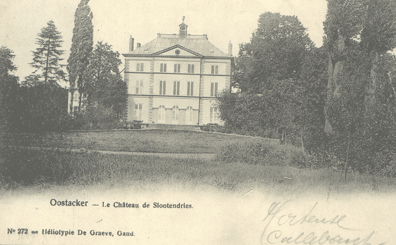
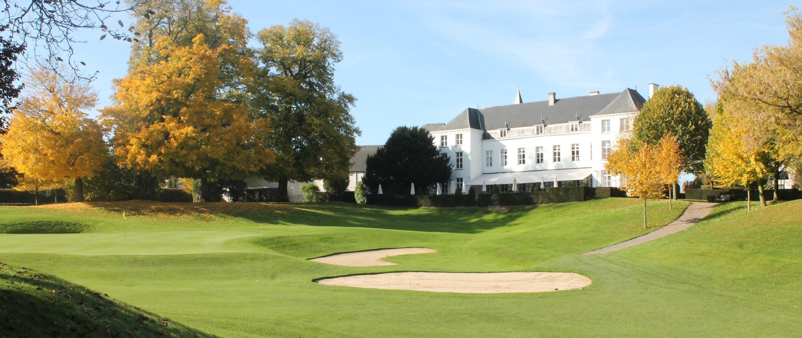
De kastelen in Waals-Brabant zijn vaak ontstaan als buitenverblijven van adellijke families en welgestelde bewoners uit Brussel. Ze liggen in een zacht golvend landschap, omringd door parken, vijvers en bossen, en vormen groene eilanden tussen steden en dorpen. Sommige domeinen zijn bekend om hun sierlijke tuinen en lange dreven, andere om hun link met historische gebeurtenissen, zoals de Slag bij Waterloo.
Vandaag zijn verschillende kasteeldomeinen vrij toegankelijk als park of wandelgebied. Andere kastelen bieden tentoonstellingen, rondleidingen of evenementen, waardoor je er niet alleen van de omgeving, maar ook van cultuur en erfgoed kunt genieten. Dankzij de centrale ligging van Waals-Brabant zijn veel kastelen bovendien vlot bereikbaar vanuit Brussel en andere steden.
Ontdek ook onze artikelen over de mooiste kastelen van België of bekijk kastelen in naburige provincies zoals Vlaams-Brabant en Henegouwen.
In Waals-Brabant vind je verschillende kastelen met parken, vijvers en tuinen, maar ook domeinen die een rol hebben gespeeld in de geschiedenis van de regio. In onze lijst zie je per kasteel een korte beschrijving en foto's, zodat je snel ontdekt welke plekken het meest bij jouw interesses passen.
Ja, sommige kasteeldomeinen hebben speeltuinen, grote grasvelden of speciaal ingerichte zones voor gezinnen. De parken lenen zich goed voor korte wandelingen, picknicks en een eerste kennismaking met erfgoed voor kinderen.
Zeker. Verschillende kastelen liggen op korte afstand van Waterloo, Nivelles of andere attracties in de provincie, zodat je makkelijk een gevarieerde daguitstap kunt plannen.
Door de ligging rond de Brusselse rand zijn veel kastelen in Waals-Brabant vlot bereikbaar met de auto en in sommige gevallen met het openbaar vervoer. Dat maakt de provincie bijzonder interessant voor korte uitstappen of halve dagtrips vanuit de hoofdstad.